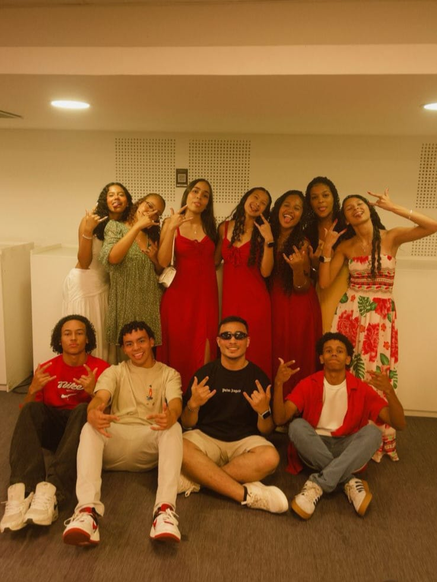
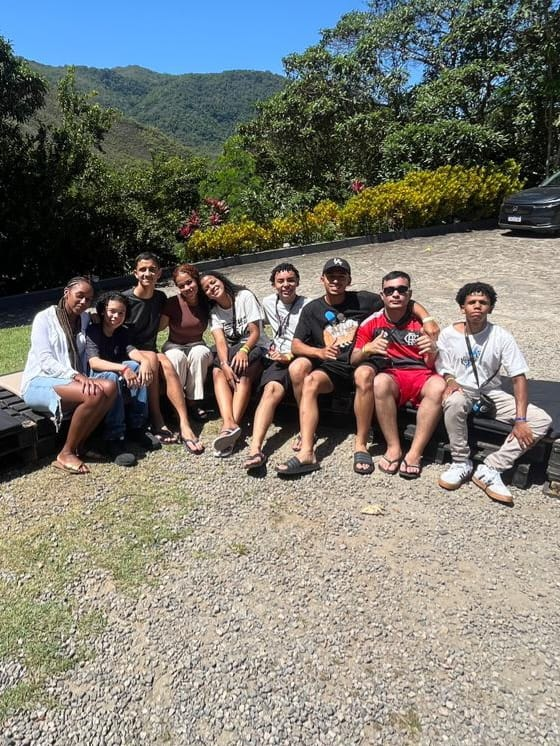

Nos primeiros dias, entre apresentações, dinâmicas e momentos descontraídos, o grupo começou a se formar quase sem perceber. Conversas simples foram se tornando mais frequentes, risadas começaram a surgir com facilidade, e aquela conexão leve foi crescendo. Mas, por trás de tudo isso, havia algo mais profundo acontecendo.
Durante os momentos de louvor e palavra, algo começou a mudar. Não era só ouvir música ou prestar atenção em alguém falando — era sentir. Muitos chegaram ali carregando coisas que ninguém via: dúvidas, medos, inseguranças, dores guardadas. E foi justamente nesses momentos que o Espírito Santo começou a agir de forma clara.
Havia lágrimas que não eram de tristeza, mas de alívio. Abraços que não eram apenas gestos, mas respostas. Silêncios que diziam mais do que qualquer palavra. Cada pessoa estava vivendo algo pessoal com Deus, mas, ao mesmo tempo, aquilo estava conectando todo mundo de uma forma inexplicável.
Foi nesse ambiente que o grupo deixou de ser apenas um grupo. A amizade não foi construída só por afinidade, mas por algo espiritual. Vocês não estavam apenas juntos — estavam sendo transformados juntos.
As noites se tornaram ainda mais marcantes. Depois das programações, quando tudo parecia mais calmo, surgiam conversas profundas, confissões sinceras, momentos de oração. Ali, sem pressão, sem máscaras, cada um pôde ser quem realmente era. E o mais incrível: ninguém se sentia sozinho.
O mover do Espírito Santo não ficou restrito ao palco ou aos momentos “oficiais”. Ele estava nos detalhes: em uma palavra dita na hora certa, em alguém que decidiu ouvir o outro, em um gesto de cuidado, em uma risada que trazia leveza depois de um momento intenso. Era como se Deus estivesse costurando cada encontro, cada conversa, cada conexão.
E foi assim que a amizade de vocês nasceu — não só de experiências compartilhadas, mas de um encontro real com Deus.
Quando o acampamento foi chegando ao fim, veio aquela sensação difícil de explicar. Não era só tristeza por ir embora, mas uma consciência de que algo muito importante tinha acontecido ali. As despedidas foram intensas, cheias de emoção, porque todos sabiam que aquilo não era comum.
Mas o mais bonito é que o mover não terminou ali.
O que começou no InterCamp 2025 continuou fora dele. As amizades permaneceram, mas, mais do que isso, a fé foi fortalecida. As conversas não eram mais superficiais — havia propósito. Os encontros não eram apenas para passar o tempo — havia conexão verdadeira.
Hoje, quando vocês lembram daquele acampamento, não lembram só das atividades ou das brincadeiras. Lembram do que sentiram. Lembram do que mudou dentro de vocês. Lembram de como Deus se fez presente de forma tão real.
E entendem que aquele grupo não surgiu por acaso.
Foi Deus, através do Seu Espírito, unindo histórias, curando corações e criando laços que vão muito além daquele momento.
Porque o InterCamp 2025 não foi apenas um acampamento.
Um encontro com Deus — e o começo de uma amizade construída sobre algo que não se abala com o tempo.


Copyright 2026 - Dikilado